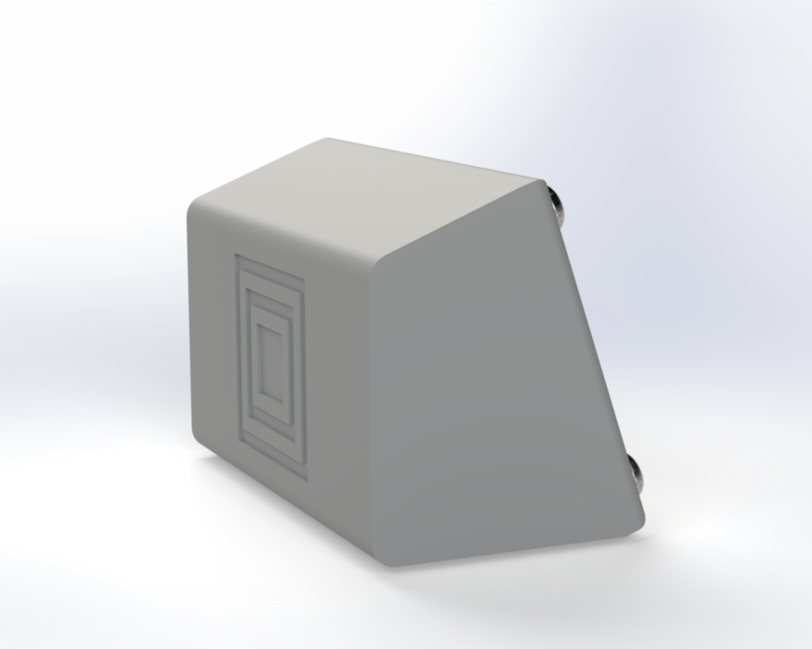
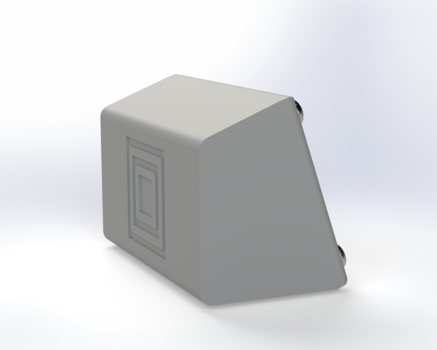

Sumo Robot
A Student Designed and constructed Sumo Robot Project
Motivation.
This project was completed as a part of the ELEC3020 Semester 2 final project. It involved designing and creating a Sumo Robot within a 6 week time frame on a $50 Budget. It involved managing team with different skills to create a final product which was capable of competing against other student made robots
Competition.
Robot-Sumo is an engineering and robotics competition primarily based in Japan in which two robots attempt to push each other out of a circular arena [1]. All Sumo competitons have different size and weight requirements that must be satisfied in order to compete. Our competition had the following requirements:
Size – The robot must fit within a 25cm x 25cm x 25cm cube at the beginning of each match.
Weight – The robot must not exceed 1kg in weight.
Other – The robot must be fully autonomous in its driving and use at least three sensors to understand when it is within the ring and when it has left the ring as well as keeping track of the opponents positon
Process.
We began the project by brainstorming raw ideas for the bot taking input from each team member on what they believe a successful bot would look like including some strategy that may be successful. After this and research on Sumo bots others have made we settled on a strong and fast bot which could ideally evade enemy detection and push it out of the ring. The next step was making a decision on parts importantly motors, distance sensors and floor sensors. For motors we settled on 6V geared DC motors for there ease of use and inexpensiveness. For robot detection we deciding on Time of Flight Sensors which use lasers to measure a precise distance infront. We settled on these rather than the more commonly chosen Ultrasonic sensors as we believed they had too wide of a detection angle and a lack of precision that we were hoping for. Finally we chose Light Dependant Resistors (LDR) as a floor detection method because of there ease of use. Using a TTGO T-Display S3 we breadboarded each component and wrote code in C++ which allowed each component to work in unison. From this we discovered a couple of issues:
1. The motors were not very fast. Although having a lot of torque we struggled to believe they would move a kilogram robot quickly enough in the ring.
2. The motors didnt have a feedback mechanism although we attempted to use a compass module to try to provide some feedback for the direction of the bot we could not get reliable readings.
2. The TOF sensors had a very long range and would often detect objects outside of our ideal detection window.
To solve these issues we made some changes. First we changed to 12v motors with encoders to provide higher speed and torque as well as feedback which we could later implement into a PID controller. We also made a design decision to angle the TOF sensors downwards as to avoid overdetecting objects far in the distance as well as picking up bots that may be low to the ground. After making these decisons we moved onto chassis design with a focus of making a strong bot which was capable of housing our components as well as raming opponents out of the ring. To do this I designed a chassis with a steep sloped front and motors far apart to allow for fast rotational velocity and strong pushing in the ring. After itterating the design a couple of times we fitted components in and focus our efforts on coding and strategy of the bot. The primary strategy we chose for the bot was a rotating search pattern and a ramming attack when the opponent was within range. After implementing this and doing much testing we found issues with it but unfortunately ran out of time to itterate our strategy.
Improvements.
If I were to redo this project I would focus on a couple of key improvements. First broadly I would take a greater focus on coding and strategy. Both my team and I underestimated the lead time on writing code uploading and testing for each change which ultimately lead to a worse strategic performance for the bot. Another key change I would make was the LDR sensor chose. Although a simple implementation we had many issues with getting these sensors to work reliably especially when changing the circuit or code. An IR sensor or similar would have worked better for this application.
Final Remarks.
Overall our bot beat our expectations and performed better than 26 other student teams to place 9th overall. Despite many challenged throughout the project as a team we were able to contribute our different skills to create a successful final product. This project taught me a lot about project managing and teamwork especially with multi disciplinary teams as well as proper time management.
References.
[1] [1]“Robot-sumo,” Wikipedia, Jun. 14, 2022. https://en.wikipedia.org/wiki/Robot-sumo

 
